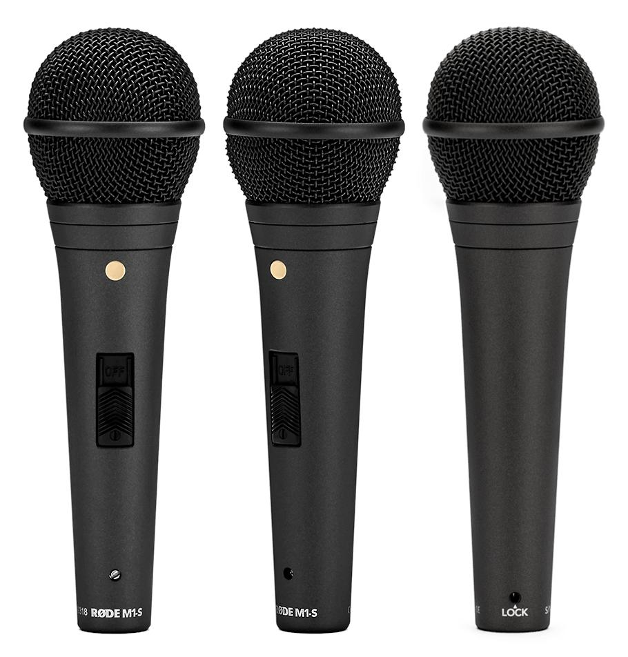
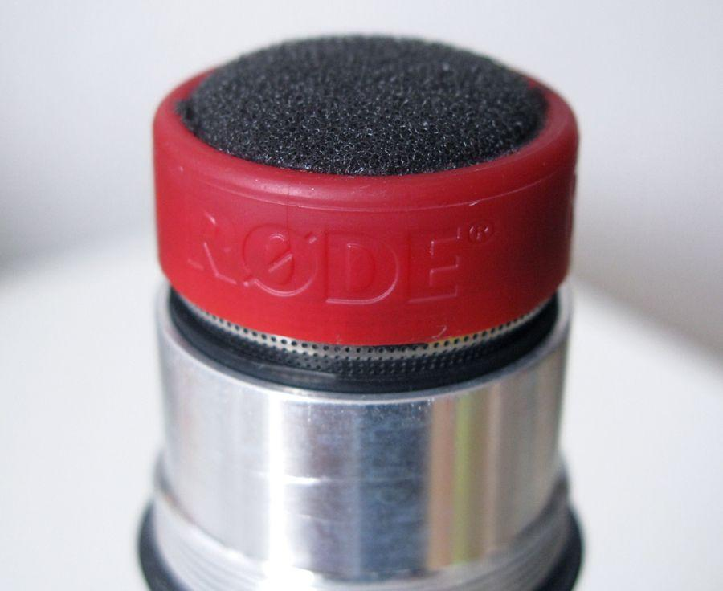
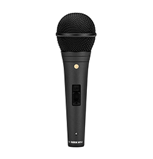
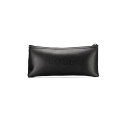
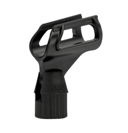
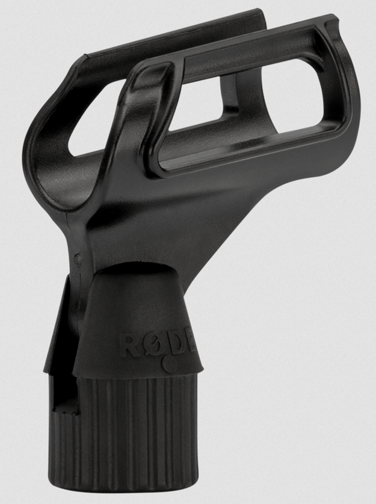
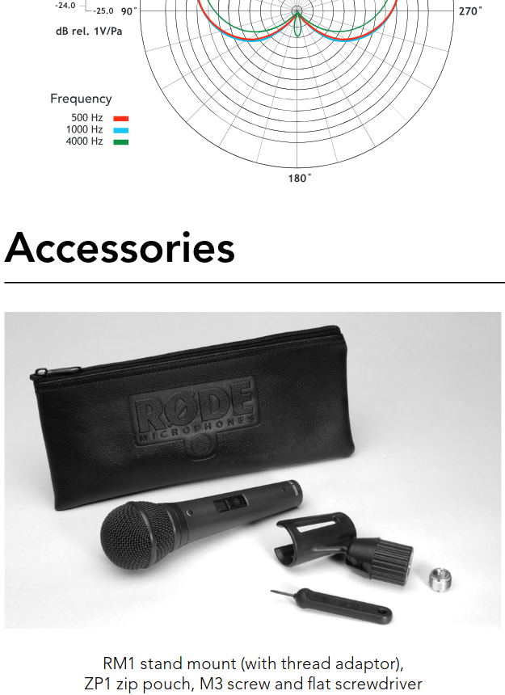
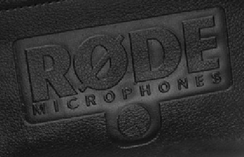
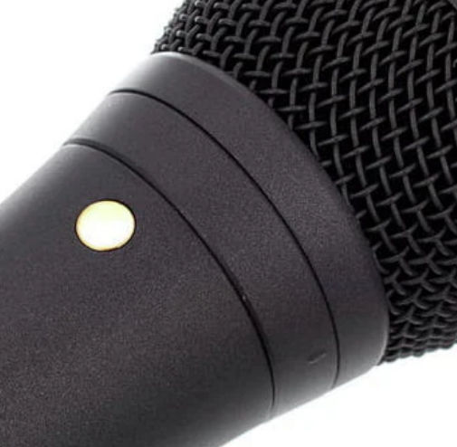

Найти в интернете информацию о том, что существуют подделки микрофона RODE M1 и M1-S не удалось.
Внешний вид, согласно фотографиям с официального сайта, следующий:

Если снять круглую головку микрофона, под ней будет капсуль следующего вида:

Видно, что на самом капсуле должен быть логотип RODE, капсуль красный.
В коробке, согласно официальному сайту, должны лежать только 3 предмета (хотя в PDF-документации фотография из 5 предметов):
  
Держатель микрофона выглядит так (крупным планом):

Однако, на официальном сайте есть инструкция, в которой имеется другая фотография комплекта с микрофоном. Ссылка на инструкцию:
https://edge.rode.com/pdf/page/305/modules/1021/m1-s_product_manual.pdf
На фотографии в разделе Аксессуары видно 5 предметов:

Здесь, помимо микрофона, написано:
Непонятно, эти аксессуары должны идти в комплекте, или это сфотографированы все возможные аксессуары.
Отдельно на сайте rode.com нет в продаже аксессуара "M3 screw" и "Flat screwdriver". По поиску они не находятся, в разделе Accessories (https://rode.com/en/accessories) их тоже нет. Видимо, все-таки они идут в комплекте, иначе откуда они бы появились у пользователя? Значит, скорее всего, на странице товара ошибка, и не все перечислено. Возможно, что страницу сделали на основе страницы для модели M1, а у нее нет выключателя, значит отвертка не требуется (отвертка нужна чтобы иметь возможность блокировать выключатель). А винт, возможно, просто вкручен в держатель микрофона.
Печать с надписью RODE MICROPHONES, более крупно:

По всей видимости, это фото в документации имеет следующий оригинал, рассылаемый как рекламные материалы продавцам:
https://www.audiosaurus.co.za/cdn/shop/products/ADSR_Rode-M1-S-mic_AudiosaurusZipbag.jpg?v=1630330682&width=1000
На кольце, которое ближе к ручке микрофона, вроде как должны быть выпуклая риска:

Но на полных фотографиях микрофона ее не видно. Непонятно, это фото с оригинального микрофона или с подделки. Похоже, что наличие риски зависит то ли от партии, то ли от года выпуска. На многих оригинальных RODE M1-S такой риски нет.
Еще можно проверять вес микрофона, в документации заявлено что он весит 360 гр. Обычно, допустимый разброс - +/- 25 гр. минимум.